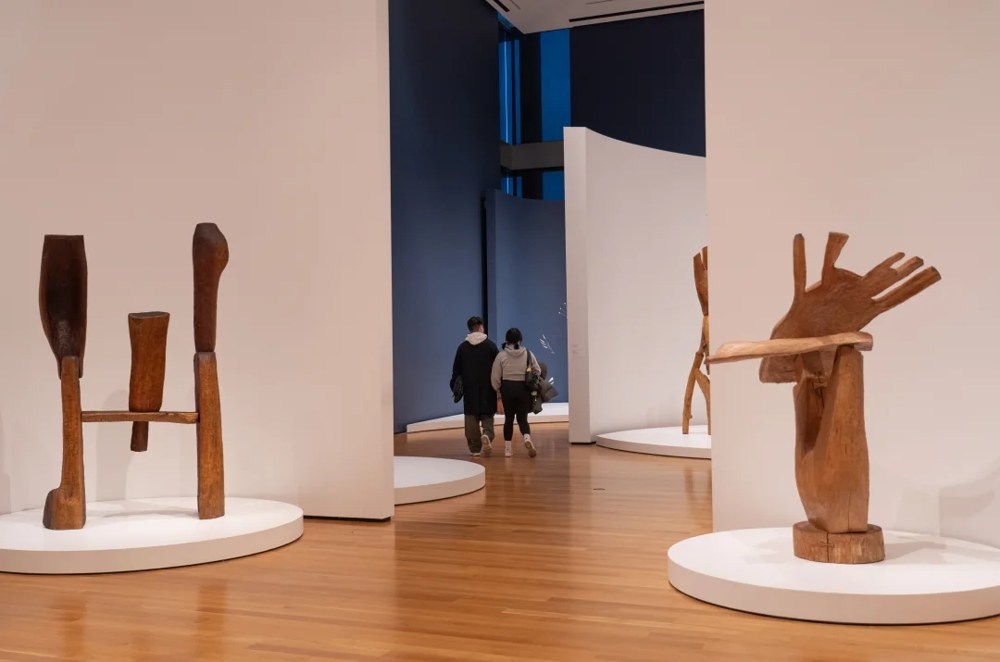

Past exhibition
Following Space: Thaddeus Mosley & Alexander Calder
November 20, 2024–June 1, 2025Seventeen monumental wood sculptures by Thaddeus Mosley, made between 2001 and 2024, shown alongside five works by Calder in SAM's double-height galleries. It was the first exhibition to bring the two artists together.